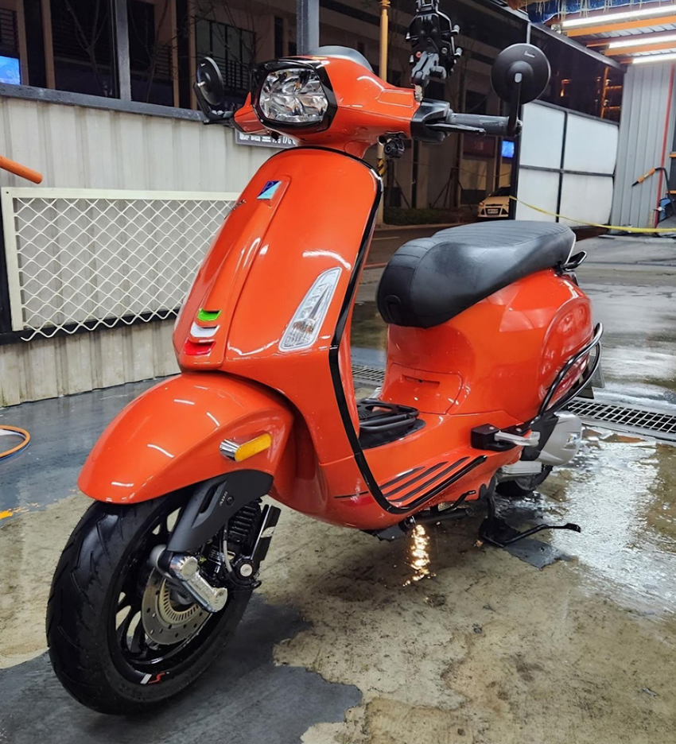
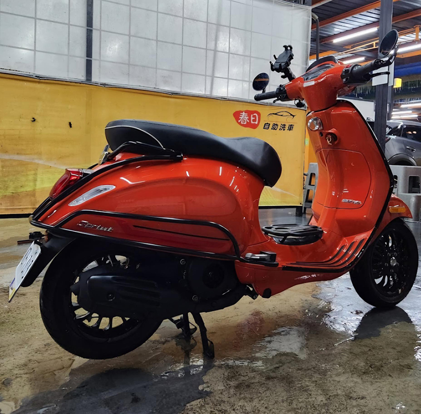
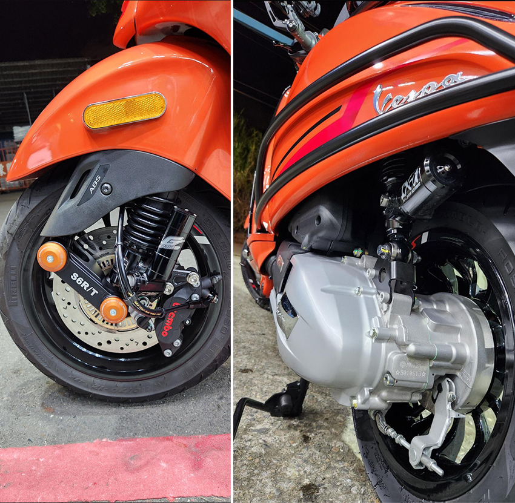

我叫陳建佑，喜歡機械，對汽機車相當有興趣，所以也是一個愛車人。我從大學的時候，騎乘家裡的125cc機車，從淡水到桃園迴龍通勤了四年，同學都說我的人生有四分之一在車上。可以說跟機車相當的緣分，如果跟UBER EAT和FOOD PANDA外送員比起來，我在學生時代的里程累積應該和他們相當。
退伍後工作到現在已邁進第15年，我的機車經驗擁有過不同的品牌，包含國產常見的台鈴、三陽、山葉以及光陽，大部分都是速克達為主。在30幾歲的時候，報考了大型重機駕訓班，考取大型重機駕照之後，前些年也接觸了本田的檔車，因為駕駛體驗的不同，檔車更能感受到原始機械的感覺，也體會到了行車安全的重要。由於近幾年生了小朋友，考量方便性與騎乘體驗，以及太太在市區也有機車使用的需求，購入了復古風的品牌：偉士牌。
偉士牌是一個來自義大利的品牌，誕生於1946年，這個品牌的前身是軍用的機車，一開始是為了大量生產耐用的速克達作為出發點，整台車大部分是鋼製車身，類似汽車的鈑金，是一個很特別的存在。我記得前些年有個廣告，廣告台詞重覆的說著孔雀和雞，意思暗喻機車雖然是一項交通工具，但可以選擇更棒體驗的孔雀、或者是更符合平民使用的雞。
中文名稱偉士牌是義大利語Vespa，是黃蜂的意思，因為機車的腳踏處從側面看起來就像是一隻黃蜂纖細的腰部，所以這款機車就被稱為「黃蜂」。在1953年上映的好萊塢電影《羅馬假日》中，女主角奧黛麗·赫本飾演的某國公主，劇中喬伊載著公主展開一場浪漫之旅時的座駕，就是一輛偉士牌機車，無疑這部電影也幫偉士牌打了非常強而有力的廣告。
回到我自身的騎乘體驗，坦白說，偉士牌是價格相對高昂的品牌，在保養維修上價格也是高於常見的國產品牌。在車輛配備上，也不甚滿意，很多實用的配備都沒有。說騎偉士牌是騎一份情懷和品味一點也不為過。我知道很多父執輩都有老偉士牌的打檔體驗，在以前的年代，這種速克達稱為<文車>。大多都是經濟狀況較好的醫生、老師甚至老闆等才會有的交通工具。
對我而言，騎偉士牌最棒的就是它的坐姿，因為坐姿很挺，不同於常見的速克達，人的身體有點龜著在騎車，而騎乘偉士牌，由於符合人體工學，人會自然而然的坐直坐正，這點的確有別於其它品牌。不過，偉士牌還是有很多地方值得，或者說是需要升級，比如說煞車，一般來說白牌的偉士牌都是前碟煞配上後鼓煞，前面碟煞的卡鉗體積不大，碟盤尺寸也偏小，對於重量不輕的鋼製車身來說，在煞車力道上確實有待加強。再來是避震器，由於偉士牌的母廠<比雅久>是飛機製造工廠，在前避震器的部分，使用的是很少見的單搖臂，但是原廠配備的單搖臂作動不夠滑順，可以升級帶有培林的鍛造搖臂，而原廠前後避震器在吸震的部分效果也是差強人意，是非常建議升級的項目。當然，為了安全著想，少不了一套抓地力更好的輪胎。
說了這麼多，我個人升級了煞車系統、避震系統、輪胎、大燈組，LED方向燈組、方向燈蜂鳴器，煞車拉桿及油門握把，後鼓煞煞車拉桿及白鐵煞車線，腳踏置物支架，車身防撞支架，還有這年頭絕對不可少的行車記錄器。以上都是我購車這一年多來，慢慢補足我對車輛認定需要升級的部分。我慢慢理解車子的升級應該來自車主對車輛的要求，而不是一昧的花錢跟風。也許很多人認為機車只是代步工具，但我認為機車也可以是自己的好夥伴，在不影響他人的情況下，適度的作升級，打造自己的品味和風格。
最後我想作個結論，我相信很多人都對車子有一分情感，無論是汽車或是機車，我相信每個喜愛的事物上都有靈魂，在能力範圍內找到自己喜歡的事物並專心的投入，是一件很美好的事。打造自己的愛車，不一定是最貴最好的，但這些過程都是自己很棒的回憶。也不需要跟人家比較，了解自己的愛好和需求才是更有價值的。如下圖片檔，我附上幾張自己的愛車跟車友一同交流，也祝福所有愛車人都能找到自己心儀的車款，慢慢的升級與愛車培養感情，打造屬於自己的品味，最重要的是：行車平安。
|  |
|  |
|  |